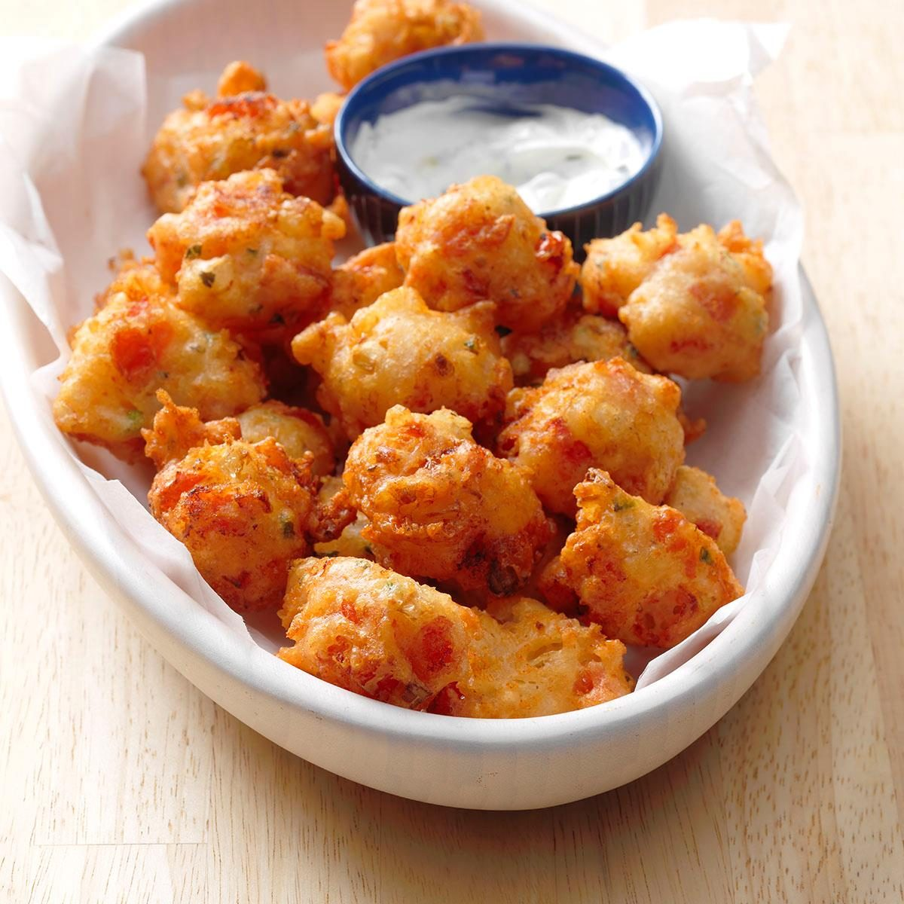

Springtime Fritters
Return to Front Page

Description
Even the Vikings had a sweet tooth every now and then
Ingredients
- 6oz flour
- A pinch of salt
- 1 egg
- 3/4 pint or so of beer (flat lager from last night will do)/li>
- A handfull of edible young leaves and flowers
- Honey
Recipe Instructions
- Put the flour and salt in a large bowl
- Make a well in the centre and break the egg into it
- Pour a little beer from the middle and mix flour from the centre
- Mix thoroughly until you have a batter the thickness of cream
- Cover the bowl with a cloth and leave to stand for about 30 minutes
- Mix in your greenery
- Drop spoonfuls of flowery batter into the hot oil, and fry until golden, turning once
- Lift them out onto a plate, and drizzle with honey to serve